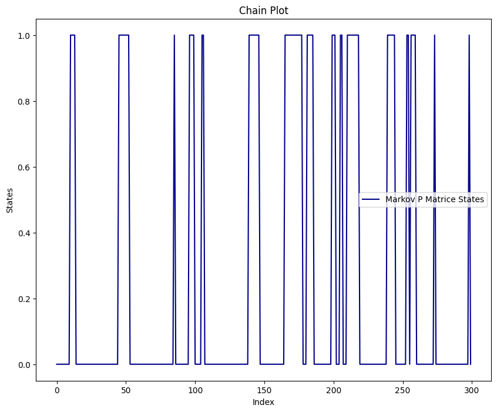
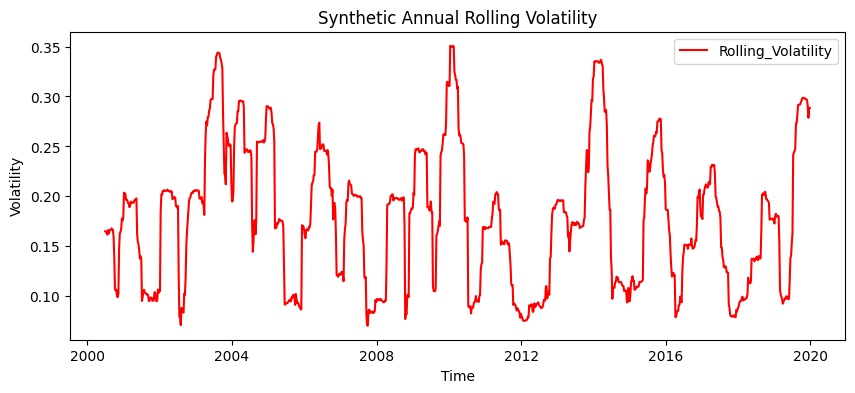
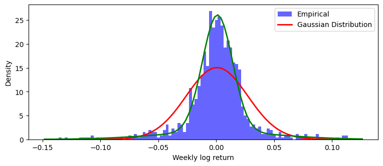
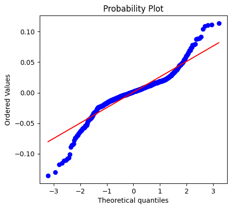
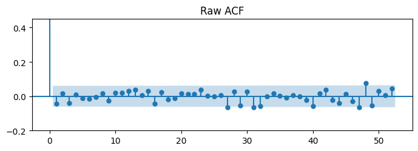
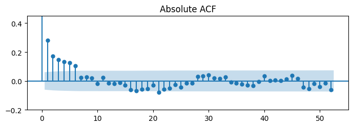
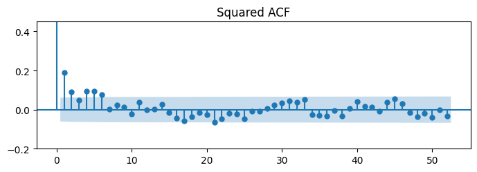

{0: 796, 1: 247}Report 1 found fat tails and volatility clustering in weekly SPY returns and proposed a two-state variance structure, but did not test it. This report builds that structure directly: a two-state Markov chain switches the variance of a Gaussian return, with parameters chosen by hand rather than estimated. The synthetic series reproduces all three stylised facts in sign — no autocorrelation in raw returns, positive autocorrelation in absolute returns, and excess kurtosis of 6.84 against 9.48 for SPY — but its volatility memory fades much faster than the memory in the real data.
Report 1 described weekly SPY log returns from 2000 to 2019 and found two things. Raw returns showed almost no autocorrelation, while absolute and squared returns stayed correlated for many weeks. The return distribution had an excess kurtosis of 9.48, far above the Gaussian value of zero. From these facts the report suggested that returns may come from a mixture of two normal distributions with a common mean and different variances. That was a suggestion, not a result.
This report tests the suggestion in the simplest possible way. Instead of fitting a model to SPY, it builds one and looks at what the model produces. A two-state Markov chain decides which variance is active in a given week, and a Gaussian shock turns that variance into a return. The question is whether this mechanism, on its own, can generate the same stylised facts. If it cannot, the two-state idea is already in trouble. If it can, the remaining question is whether the real data actually prefer it, and that requires estimation rather than simulation.
\(P\) is a Markov matrix, where each state represents a volatility regime and each entry a switching probability. The probability of moving from state \(i\) to state \(j\) is written \(p_{ij}\). Each row sums to 1 because the system must move to one of the available states. In this model the probability of moving from low volatility to high volatility is 0.05, and from high volatility to low volatility is 0.20. These values were set by hand rather than estimated from the data; Section 4 explains where they came from and Section 6 shows how much the results depend on them.
The latent volatility state is linked to the observed weekly log return through
\[ r_t = \mu + \sigma_{S_t}\varepsilon_t, \qquad \varepsilon_t \overset{\mathrm{iid}}{\sim} \mathcal{N}(0,1). \]
Here, \(S_t \in \{0,1\}\) denotes the unobserved volatility regime, \(\mu\) is the common weekly mean return, and \(\sigma_{S_t}\) is the regime-dependent standard deviation. Conditional on the current regime,
\[ r_t \mid S_t = 0 \sim \mathcal{N}(\mu,\sigma_0^2), \]
and
\[ r_t \mid S_t = 1 \sim \mathcal{N}(\mu,\sigma_1^2). \]
In the simulation, \(\sigma_0 = 0.013\) represents the low-volatility regime, while \(\sigma_1 = 0.052\) represents the high-volatility regime.
A common mean is imposed because the initial SPY analysis showed little autocorrelation in raw returns but persistent autocorrelation in absolute and squared returns. The model therefore places regime dependence in the conditional variance rather than in the conditional mean. Although the Gaussian shocks are serially independent, persistence in \(S_t\) produces clusters of large and small return magnitudes over time.
Under the stationary distribution \(\boldsymbol{\pi}=(0.8,0.2)\), a randomly selected week belongs to the low-volatility regime with probability \(\pi_0=0.8\) and to the high-volatility regime with probability \(\pi_1=0.2\).
Because both regimes have the same conditional mean, the unconditional expected return is
\[ \begin{aligned} \mathbb{E}[r_t] &= \sum_{i=0}^{1} \pi_i\mathbb{E}[r_t\mid S_t=i] \\ &= \pi_0\mu+\pi_1\mu \\ &= \mu. \end{aligned} \]
Using the law of total variance,
\[ \operatorname{Var}(r_t) = \mathbb{E}\left[\operatorname{Var}(r_t\mid S_t)\right] + \operatorname{Var}\left(\mathbb{E}[r_t\mid S_t]\right). \]
The second term is zero because the conditional mean is \(\mu\) in both regimes. Therefore,
\[ \operatorname{Var}(r_t) = \pi_0\sigma_0^2+\pi_1\sigma_1^2. \]
Using \(\pi_0=0.8\), \(\pi_1=0.2\), \(\sigma_0=0.013\), and \(\sigma_1=0.052\) gives
\[ \begin{aligned} \operatorname{Var}(r_t) &= 0.8(0.013)^2+0.2(0.052)^2 \\ &= 0.000676. \end{aligned} \]
Hence, the implied weekly standard deviation is
\[ \operatorname{Std}(r_t) = \sqrt{0.000676} = 0.026. \]
Although returns are conditionally Gaussian within each regime, their unconditional distribution is a Gaussian mixture. For a Gaussian variable, the fourth central moment is
\[ \mathbb{E}\left[(r_t-\mu)^4\mid S_t=i\right] = 3\sigma_i^4. \]
Therefore, the unconditional fourth central moment is
\[ \mathbb{E}\left[(r_t-\mu)^4\right] = 3\left(\pi_0\sigma_0^4+\pi_1\sigma_1^4\right). \]
The implied kurtosis is consequently
\[ \operatorname{Kurt}(r_t) = \frac{ 3\left(\pi_0\sigma_0^4+\pi_1\sigma_1^4\right) }{ \left(\pi_0\sigma_0^2+\pi_1\sigma_1^2\right)^2 }. \]
Substituting the model parameters gives
\[ \operatorname{Kurt}(r_t) = \frac{ 3\left[0.8(0.013)^4+0.2(0.052)^4\right] }{ (0.000676)^2 } = 9.75. \]
Since a Gaussian distribution has kurtosis equal to \(3\), the implied excess kurtosis is
\[ \operatorname{Excess\ Kurtosis}(r_t) = 9.75-3 = 6.75. \]
The model therefore produces an overall weekly standard deviation of \(0.026\) and positive excess kurtosis even though returns are Gaussian conditional on each regime. Note, however, that the implied excess kurtosis of \(6.75\) is already below the empirical SPY value of \(9.48\). This is a property of the chosen parameters, not of the simulation: even a perfect simulation of this model cannot match the observed tail heaviness.
Before the chain is used to generate returns, it is worth checking that the simulation actually reproduces the matrix it was given. Three quantities can be compared against values that are known in closed form.
The first is the transition matrix itself. Counting how often the simulated path moves from state \(i\) to state \(j\) and dividing by the number of visits to state \(i\) gives \(\hat{P}\), which should be close to \(P\).
The second is the stationary distribution \(\boldsymbol{\pi}\), the long-run share of time spent in each state. It solves \(\boldsymbol{\pi}P = \boldsymbol{\pi}\) subject to \(\sum_i \pi_i = 1\), which is a small linear system. The share of simulated weeks spent in each state should approach it.
The third is the expected time spent in a regime before leaving it. Once the chain is in state \(i\), each week it stays with probability \(p_{ii}\) and leaves with probability \(1-p_{ii}\), independently of how long it has already been there. The number of weeks until it leaves is therefore geometric, and its mean is
\[ \mathbb{E}[T_i] = \frac{1}{1-p_{ii}}. \]
This gives 20 weeks for the low-volatility state and 5 weeks for the high-volatility state. The memoryless property is an assumption of the model, not a fact about markets, and it is one of the things a richer model would relax. The three checks are summarised in Table 1.
| Quantity | Theoretical (Model) | Empirical (Simulation) |
|---|---|---|
| Transition matrix | \(P\) | \(\hat{P}\) from state counts |
| Stationary distribution | \(\boldsymbol{\pi}\) from the linear system | share of weeks in each state |
| Expected sojourn time | \(\mathbb{E}[T_i] = 1/(1-p_{ii})\) | \(1/(1-\hat{p}_{ii})\) |

{0: 796, 1: 247}Calculated Matrice:
[[755 41]
[ 40 206]]
Real P:
[[0.95 0.05]
[0.2 0.8 ]]
Estimated P-hat:
[[0.94849246 0.05150754]
[0.16260163 0.83739837]]
Differance (P-hat - P):
[[-0.00150754 0.00150754]
[-0.03739837 0.03739837]]Stationary distribution: [0.8 0.2]
sQ: [0.8 0.2]
sQ = s : True
--- PI (STATIONARY) COMPARISON ---
Empirical Pi (State 0): 0.7632 | Theoretical s[0]: 0.8000
Empirical Pi (State 1): 0.2368 | Theoretical s[1]: 0.2000
--- REGIME DURATIONS ---
Theoretical low-vol duration : 20.0000
Empirical low-vol duration : 19.4146
P-hat low-vol duration : 19.4146
---------------------------------------------
Theoretical high-vol duration: 5.0000
Empirical high-vol duration : 6.1500
P-hat high-vol duration : 6.1500The chain was simulated for 1043 weeks, the same length as the SPY sample. Of these, 796 weeks fell in the low-volatility state and 247 in the high-volatility state. Figure 1 plots the first 300 weeks of the path and shows the shape the transition matrix produces: long stretches in the low state broken by short bursts in the high state.
The estimated matrix is close to the true one in the first row and less close in the second: \(\hat{p}_{00} = 0.948\) against \(0.95\), but \(\hat{p}_{11} = 0.837\) against \(0.80\). This difference is expected. The first row is estimated from 796 transitions and the second from only 246, so the second row carries much more sampling noise.
The other two checks show the same pattern. The simulated share of low-volatility weeks is 0.763 against a theoretical 0.800. The mean time in the low state is 19.4 weeks against 20, and in the high state 6.2 weeks against 5. One point should be stated plainly: the sojourn times printed as “empirical” are computed from the same transition counts as \(\hat{P}\), so they are algebraically identical to \(1/(1-\hat{p}_{ii})\) and are not an independent check. They are reported because they translate the matrix into weeks, which is easier to judge by eye.
None of these gaps suggests a coding error. They are the size one would expect from a single path of this length, and they shrink in the 50,000-week simulation used in Section 5.2. The chain behaves as the model says it should, so it can now be used to generate returns.
Crucially, the parameters governing the Markov-switching model—both the transition probabilities and the state-dependent volatilities—were not strictly estimated from the empirical SPY data using formal statistical techniques such as Maximum Likelihood Estimation (MLE). Instead, they were heuristically calibrated based on a visual inspection of the SPY rolling volatility graph presented in the initial analysis.
The conditional standard deviations, \(\sigma_0 = 0.013\) and \(\sigma_1 = 0.052\), were selected by eye to approximate the baseline tranquility of the market and the extreme spikes observed during crisis periods, respectively. Similarly, the transition probabilities \(p_{00} = 0.95\) and \(p_{11} = 0.80\) were chosen manually to reflect a well-known market stylized fact: low-volatility bull markets are highly persistent, whereas high-volatility distress periods are severe but relatively short-lived.
Because these parameters are purely illustrative rather than empirically optimized, any discrepancies between the synthetic series and the actual SPY data must be interpreted with caution. This distinction between model structure and parameter selection forms the core of the discussion in Section 7.
The state sequence from Section 3 is now turned into returns using \(r_t = \mu + \sigma_{S_t}\varepsilon_t\). The mean \(\mu\) is set to the sample mean of SPY weekly log returns, so that only the variance behaviour is being tested. The Gaussian shocks are drawn independently of each other and of the chain. This matters for the interpretation of everything below: all of the memory in the synthetic series comes from the chain, and none of it comes from the shocks.
[-0.00070386 -0.0209455 -0.00976074 ... 0.00720608 -0.06224522
0.04484166] Log_Return
2000-01-07 -0.0007
2000-01-14 -0.0209
2000-01-21 -0.0098
2000-01-28 0.0155
2000-02-04 -0.0166Minimum annual volatility: 7.0% on 2007-10-05
Maximum annual volatility: 35.1% on 2010-01-15Figure 2 shows annualised volatility of the synthetic series over a trailing 26-week window, the same window used in Report 1. It moves between about 7% and 35%. The shape is the point rather than the level: volatility does not sit still, it rises and falls in episodes, even though the shocks themselves are independent. Persistence in \(S_t\) is enough to produce that. The range is narrower than in SPY, where the same measure reached 54%.

Figure 3 compares the synthetic returns with a single fitted Gaussian and with the two-component mixture implied by the model. The histogram is more peaked in the centre and heavier in the tails than the Gaussian, and it tracks the mixture curve instead. The quantile plot shows the same thing from the other side: the points follow the reference line through the middle and leave it at both ends.
The measured excess kurtosis is 5.03. This is clearly positive, which is the qualitative result the report is after, but it sits below the theoretical 6.75 derived in Section 2.3. The gap is sampling noise, not a modelling error. Kurtosis is a fourth-moment statistic and needs a long sample to settle down, and 1043 weeks is not long. The 50,000-week run in Section 5.2 gives 6.84, which is close to the theoretical value.


Excess Kurtosis Value: 5.03Figure 4 repeats the three autocorrelation plots from Report 1 on the synthetic data. Raw returns show no meaningful autocorrelation, which is the expected result: the direction of a return depends only on the independent shock. Absolute and squared returns show positive autocorrelation at short lags, because a week in the high-variance state is likely to be followed by another one. The model therefore separates directional memory from magnitude memory in the same way the real data do.



The table below places SPY next to two synthetic samples. The first has the same length as the SPY sample, 1043 weeks, and shows what one 20-year path of the model looks like. The second has 50,000 weeks and shows what the model does once sampling noise is removed. Comparing the two columns is also a way of seeing how much of a difference sample size alone can make.
--- STANDARD DEVIATION CHECK ---
Theoretical Std (Mixture Formula): 0.026000
SPY Empirical Std : 0.024140
Synthetic 1042 Std : 0.026519
Synthetic 50000 Std : 0.026254
Weekly Std Excess Kurtosis ACF(r) lag1 ACF(|r|) lag1 \
SPY 2000-2019 0.0241 9.4766 -0.0692 0.2997
Synthetic 1042n 0.0265 5.0342 -0.0431 0.2826
Synthetic 50000n 0.0263 6.8440 -0.0034 0.2920
ACF(|r|) lag5 ACF(|r|) lag10
SPY 2000-2019 0.2013 0.0993
Synthetic 1042n 0.1275 -0.0185
Synthetic 50000n 0.0989 0.0256 Three results stand out.
First, the overall size of the returns is about right. The model implies a weekly standard deviation of 0.026, the long synthetic sample gives 0.0263, and SPY gives 0.0241. Since \(\sigma_0\) and \(\sigma_1\) were chosen by eye, this says that the guess was reasonable. It is not evidence for the model.
Second, every stylised fact has the correct sign. Raw-return autocorrelation at lag 1 is near zero in both series. Absolute-return autocorrelation at lag 1 is 0.292 in the long synthetic sample against 0.300 in SPY, which is almost an exact match.
Third, and this is the main failure, the memory fades too quickly. At lag 5 SPY still shows 0.201 while the model gives 0.099, and at lag 10 SPY shows 0.099 while the model gives 0.026. Excess kurtosis tells a related story: 6.84 against 9.48. The model produces volatility clustering, but the clustering is shorter and milder than the market shows.
The short synthetic sample is noisier than the long one in every column. Its excess kurtosis is 5.03 rather than 6.84 and its lag-10 autocorrelation is slightly negative. This is a useful reminder that a single 20-year sample, including the SPY sample itself, carries a fair amount of noise in these statistics.
Section 5 used one set of parameters. This section changes them and asks a narrower question: which feature of the output responds to which parameter? Five scenarios are run over 50,000 weeks each, with the seeds fixed, so the differences between rows come from the parameters and not from the random draws.
P_00 P_11 Vol_Low Vol_High Std Excess Kurtosis \
Scenario
1. Base Case 0.9500 0.8000 0.0130 0.0520 0.0261 6.8310
2. High Persistence 0.9900 0.9500 0.0130 0.0520 0.0247 7.3801
3. Low Persistence 0.5000 0.5000 0.0130 0.0520 0.0377 2.3167
4. Extreme High Vol 0.9500 0.8000 0.0130 0.1200 0.0551 10.7556
5. Similar Vols 0.9500 0.8000 0.0130 0.0180 0.0141 0.3096
ACF(|r|) lag1 ACF(|r|) lag10
Scenario
1. Base Case 0.2969 0.0279
2. High Persistence 0.3688 0.2103
3. Low Persistence 0.0008 -0.0022
4. Extreme High Vol 0.3929 0.0383
5. Similar Vols 0.0295 -0.0003 The two groups of parameters do different jobs.
The volatility gap controls the tails. Widening it (Scenario 4, \(\sigma_1 = 0.120\)) raises excess kurtosis from 6.83 to 10.76, which now overshoots the SPY value of 9.48. Closing it (Scenario 5, \(\sigma_1 = 0.018\)) drops kurtosis to 0.31, near the Gaussian value of zero. When the two variances are almost equal, the mixture is no longer really a mixture, so the fat tails disappear.
The transition probabilities control the memory. Raising persistence (Scenario 2, \(p_{00}=0.99\) and \(p_{11}=0.95\)) lifts the lag-10 absolute autocorrelation from 0.028 to 0.210, well above the SPY value of 0.099. Removing persistence (Scenario 3, both probabilities 0.5) destroys the clustering completely: absolute autocorrelation falls to zero at every lag. The regime still switches in that scenario, but the switching is no longer predictable, so there is no memory left to detect.
The separation is not perfect, because the transition probabilities also move the stationary distribution. In Scenario 2 the chain spends about 17% of its time in the high state instead of 20%, and kurtosis moves a little as a result (6.83 to 7.38). In Scenario 3 it spends half of its time there, which balances the mixture and pulls kurtosis down to 2.32. Persistence mainly drives memory, but it reaches the tails through \(\boldsymbol{\pi}\) as well.
Scenario 4 also exposes a tension. Raising \(\sigma_1\) brings kurtosis to a realistic level, but it also raises the weekly standard deviation to 0.055, more than twice the SPY value of 0.024. A parameter set cannot be judged one statistic at a time.
The mechanism works in the qualitative sense. A two-state chain with a common mean and two variances produces near-zero autocorrelation in raw returns, positive autocorrelation in absolute returns, and positive excess kurtosis. These are exactly the three facts Report 1 measured in SPY, and none of them were put into the model by hand. They follow from the structure: independent shocks give no directional memory, a persistent state gives magnitude memory, and mixing two variances gives fat tails. The question that opened this report therefore has a positive answer.
The quantitative match fails in one specific place. The model’s volatility memory is too short. SPY keeps a lag-10 absolute autocorrelation of 0.099 while the model gives 0.026. Section 6 shows that this can be repaired by raising \(p_{00}\) and \(p_{11}\), but the repair is not free: Scenario 2 overshoots at lag 10 and still does not reach the observed kurtosis.
There are at least three reasons why the fit is incomplete.
The important limit of this report is that it cannot separate the first reason from the other two. A poor fit caused by a bad parameter guess and a poor fit caused by the wrong structure look identical from here. Only estimation, choosing the parameters to maximise the likelihood of the actual SPY data, makes that separation possible. Until then the honest conclusion is a narrow one: the two-state mechanism can produce the stylised facts, and nothing in this report shows that it is the mechanism behind SPY.
The next report estimates the parameters instead of choosing them. The Gaussian mixture likelihood, and then the Markov-switching likelihood, will be maximised on the SPY training sample, which produces \(\mu\), \(\sigma_0\), \(\sigma_1\), \(p_{00}\) and \(p_{11}\) from the data rather than from inspection of a chart.
Two things follow. The fit gap in Section 5.2 can then be attributed either to the parameters or to the structure, which this report could not do. And the state sequence, which was observed by construction here, can be inferred from the returns through the filtered probabilities. That is the question left open at the end of Report 1: whether a high-volatility regime can be detected while it is happening.